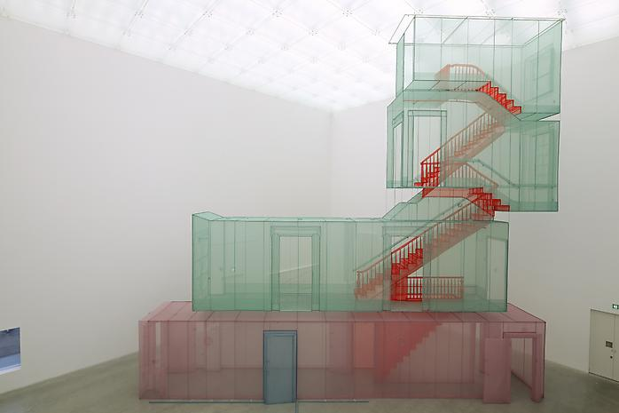
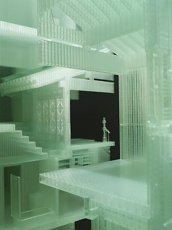

Do Ho Suh
Suh was born in Seoul, South Korea in 1962. After earning his
Bachelor of Fine Arts and Master of Fine Arts in Oriental
Painting from Seoul National University, and fulfilling
his term of mandatory service in the South Korean military,
Migration, both spatial and psychological, has been one of Suh's themes,
manifested through biographical narrative and emotionally inflected
architecture.Best known for his intricate sculptures that
defy conventional notions of scale and site-specificity,
Suh's work draws attention to the ways viewers occupy and
inhabit public space. Interested in the malleability of
space in both its physical and metaphorical manifestations,
Suh constructs site-specific installations that question
the boundaries of identity. His work explores the relation
between individuality, collectivity, and anonymity.